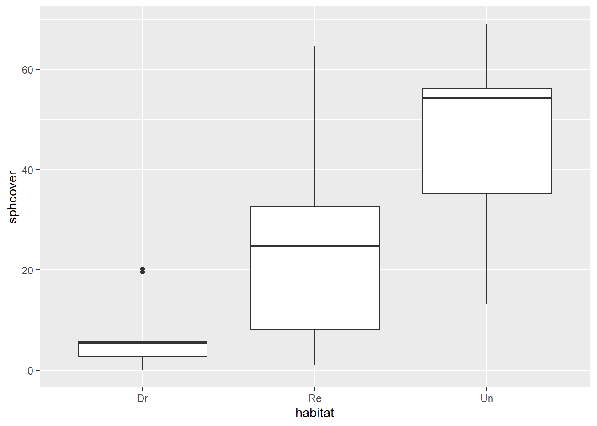

Pour ce laboratoire, nous utiliserons le jeu de données sphagnum_cover.csv, qui provient de l’article:
Maanavilja, L., Kangas, L., Mehtätalo, L. and Tuittila, E.‐S. (2015), Rewetting of drained boreal spruce swamp forests results in rapid recovery of Sphagnum production. J Appl Ecol, 52: 1355-1363. doi:10.1111/1365-2664.12474)
Ces données contiennent des mesures du pourcentage de couverture par les sphaignes (sphcover) pour 36 marécages boréaux divisés en trois types (habitat): Dr = drainés, Re = remouillés et Un = non-drainés.
cover <- read.csv("../donnees/sphagnum_cover.csv")
str(cover)## 'data.frame': 36 obs. of 3 variables:
## $ site : Factor w/ 36 levels "AmLuxx","Ev01VR",..: 1 5 6 9 29 31 32 33 34 10 ...
## $ habitat : Factor w/ 3 levels "Dr","Re","Un": 3 3 3 3 3 3 3 3 3 1 ...
## $ sphcover: num 35.3 56.2 46.6 56 54.3 ...\[(\bar{x} + t_{(n-1)0.025} s_{\bar{x}}, \bar{x} + t_{(n-1)0.975} s_{\bar{x}})\]
Rappel: La fonction qt(p, df) permet d’obtenir pour une valeur p donnée la valeur du quantile de la distribution \(t\) avec df degrés de liberté.
Simulez 10 000 échantillons bootstrap pour la moyenne calculée en a). Quelle est son erreur-type selon le bootstrap? Est-ce que cette statistique apparait biasée?
Comment la distribution du bootstrap diffère-t-elle d’une distribution normale? Pour répondre à cette question, il peut être utile de tracer un graphique quantile-quantile (dans le code ci-dessous, res est le résultat du bootstrap):
qqnorm(res$t)
qqline(res$t)library(ggplot2)
ggplot(cover, aes(x = habitat, y = sphcover)) +
geom_boxplot()
Quelles sont les suppositions d’un modèle d’ANOVA classique qui décrirait la couverture des sphaignes en fonction du type d’habitat? Est-ce que ces suppositions semblent respectées ici?
Ajustez le modèle linéaire sphcover ~ habitat au jeu de données cover. Consultez le sommaire des résultats du modèle avec la fonction summary et les intervalles de confiance des coefficients avec la fonction confint. Quelle est l’interprétation de chaque coefficient? Les intervalles de confiance sont-ils plausibles?
Créez une fonction avec pour arguments x et i, qui ajuste le modèle linéaire en b) en remplaçant le jeu de données original (data = cover) par data = x[i, ], puis retourne les coefficients du modèle avec la fonction coef. Ensuite, appliquez boot au jeu de données cover avec la fonction créée et en effectuant 10 000 réplicats.
Notes
Lorsque le premier argument de boot est un jeu de données, ce sont les rangées de ce jeu de données qui sont ré-échantillonnées.
Puisque la statistique calculée par la fonction comporte plusieurs valeurs (chacun des coefficients), l’élément t du résultat de boot est une matrice plutôt qu’un vecteur. Les colonnes de cette matrice correspondent à chacun des coefficients dans l’ordre. Vous pouvez calculer une statistique pour chaque colonne avec la fonction apply, ex.: apply(res$t, 2, mean). Ici, 2 indique de calculer la fonction mean par colonne (1 signifierait par rangée).
strata = cover$habitat à la fonction boot.Répétez l’analyse en c) avec un ré-échantillonnage stratifié et comparez les erreurs-types obtenues pour chaque coefficient.
Calculez l’intervalle de confiance pour le coefficient habitatUn selon le résultat du bootstrap en d). Notez qu’il faut ajouter l’argument index = 3 à la fonction boot.ci pour indiquer à R de calculer l’intervalle pour le 3e coefficient.
Finalement, nous allons ré-échantillonner les résidus du modèle.
Ajustez un modèle linéaire comme en b), puis ajoutez au jeu de données coverune colonne pour les valeurs attendues (fitted) du modèle.
Écrivez une fonction qui crée un nouveau jeu de données en additionnant un vecteur ré-échantillonné x[i] aux valeurs attendues pour produire une nouvelle variable réponse, puis qui ajuste un modèle avec cette nouvelle variable réponse en fonction de l’habitat.
Simulez 10 000 échantillons avec la fonction boot, avec comme arguments (1) le vecteurs de résidus (residuals) du modèle et (2) la fonction créée ci-dessus. Ne spécifiez pas de strates. Calculez de nouveau la moyenne, l’erreur-type et l’intervalle de confiance à 95% des coefficients.
Le ré-échantillonnage des résidus est-il un bon choix pour ces données?